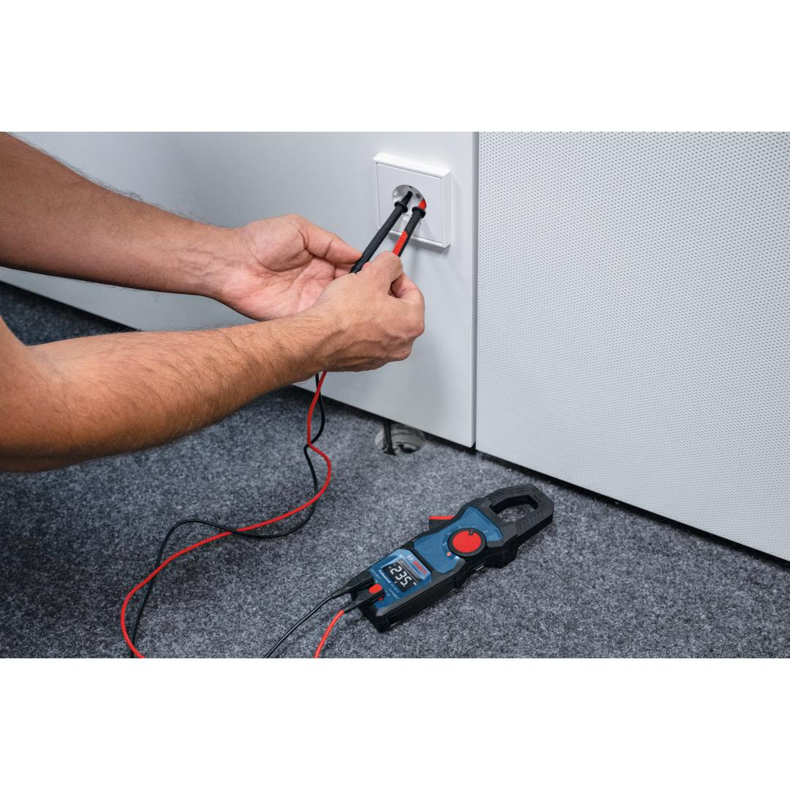
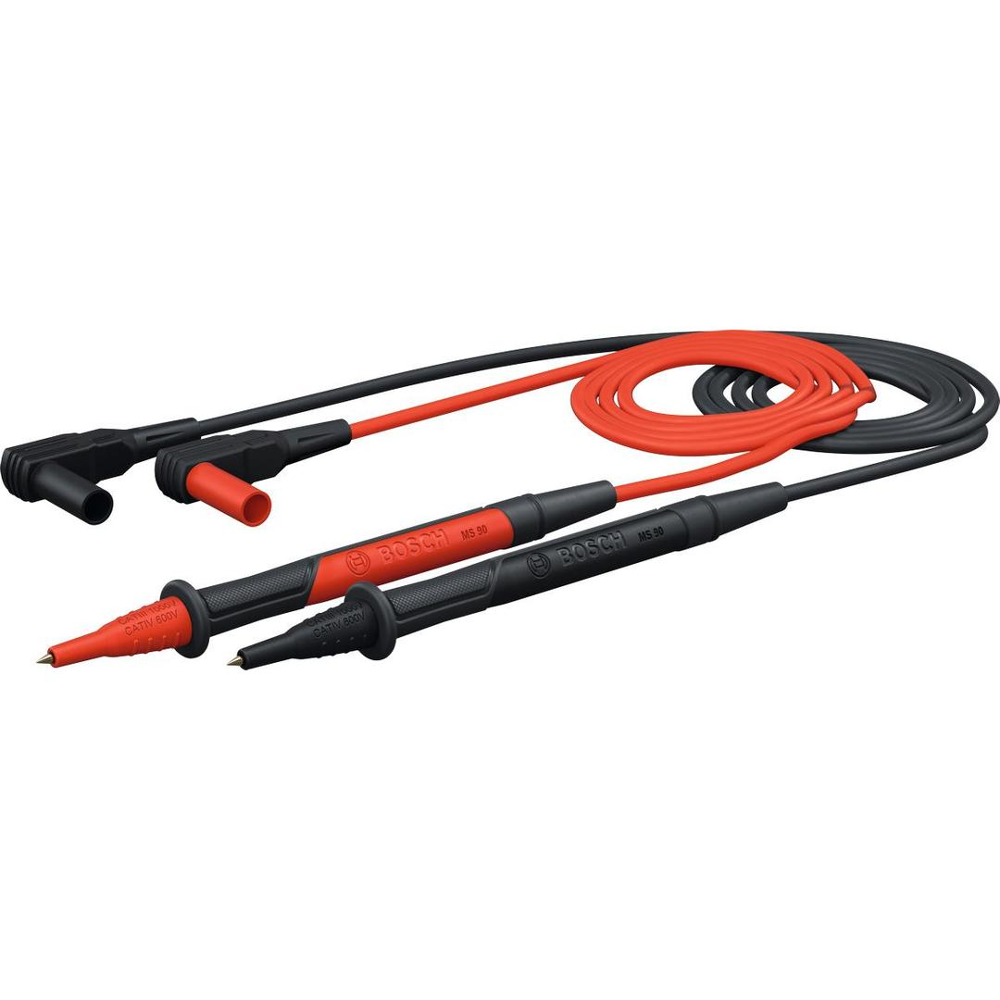

1600A038D2



| AC current |
10 A |
| Safety class |
CAT IV 600 V / CAT III 1000 V |
| Safety class with removed caps |
CAT II 1000 V |
| Measuring strips cable length |
90 cm |
| Cable Break Detection |
No |
Flexible measuring strips for precise electrical work
The MS 90 Professional are designed to enhance efficiency for electricians. With a double-insulated silicone coating, these strips maintain flexibility even in lower temperatures, ensuring optimal working conditions. The removable caps allow precise measurement of smaller components, offering versatility with measurement categories of CAT IV 600V / CAT III 1000V, 10A (with cap) and CAT II 1000V, 10A (without cap). A rubber coating provides a stable grip, enhancing safety and preventing slippage during use.
Electricians can rely on the MS 90 Professional for accurate measurements in electrical installations, maintenance, and repairs. Compatible with the Bosch testing tools, they are a vital accessory for any professional's toolkit.